福島の子ども保養プロジェクト 2014コヨットin埼玉を開催しました
8月18日から20日の三日間、2014コヨットin埼玉実行委員会と埼玉県ユニセフ協会の共催で、「2014 コヨットin埼玉（福島の子ども保養プロジェクト）」を飯能市の埼玉県立名栗げんきプラザで開催しました。
今年は、福島に住む子供たち22人が夏休みのひと時を元気に過ごしました。
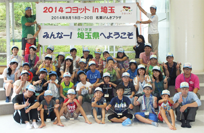
福島の子ども保養プロジェクトは、東京電力福島第一原子力発電所事故後の子どもたちの被ばく積算量を心配する保護者の気持ちに応えようと、福島県生協連、福島県ユニセフ協会、福島大学災害復興研究所が主催しています。これに日本生活協同組合連合会や日本ユニセフ協会も加わってこのプロジェクトを立ち上げ、2011年からこれまで全国でおこなった保養企画には、累計で6万4,205人の子どもたちや保護者の方々に参加いただいています。（2014年3月末時点）
埼玉でも福島県生協連と日本生協連の呼びかけに応えて、一昨年から取り組みをすすめ、今回で三回目となりました。
8月18日朝、郡山駅をバスで出発した一行は、昼過ぎ、道の駅芦ヶ久保に到着し、開催場所である名栗げんきプラザに向かいました。
会場ではガイダンスの後、早速、グループづくりのワークショップと歓迎行事をおこないました。 ワークショップでは、4グループで「グループチャレンジ」プログラムを使って、グループづくりワークをしました。
| 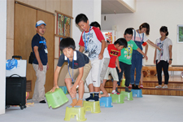 | 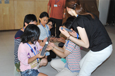 |
| 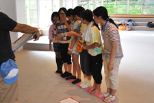 | 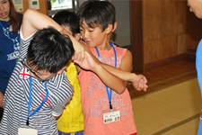 |
| みんなで協力しあったグループチャレンジ | |
プラネタリウム室での歓迎会では、迎えていただいた飯能市地域福祉課課長の塩谷様よりご挨拶をいただきました。この日に向けて県内の生協役職員、組合員による「恋するフォーチュンクッキー」に載せた映像での歓迎のほか、ほぺたん（コープみらい）、こんせんくん（パルシステム埼玉）、ココロン（医療生協さいたま）も登場し、歓迎しました。また、夜におこなった、げんきプラザ本館屋上での星の観察会では、望遠鏡越しに夏の夜空を観察し、土星の環を眺めることができました。
| 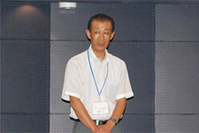 | 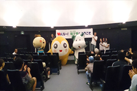 |
| 飯能市 塩谷様より挨拶いただきました | 歓迎会にはキャラクターも登場しました |
| 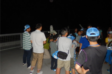 | 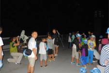 |
| 夏の夜空を堪能しました（星の観察会） | |
19日は、午前から名栗カヌー工房（名栗市下名栗）でのカヌー体験に向かいました。バスで名栗ダム管理施設に到着後、大型のカヌーでカヌー工房に移動し、同工房スタッフの皆さんのレクチャーを受けながら、カヌーを体験しました。
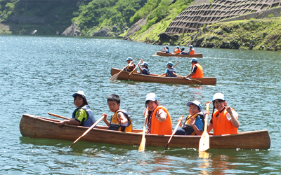
2日目の夜は、ファイアー場でキャンプファイヤー。火の神様からの火が点火され、勢いよく燃え上がる焚火をみんなで囲み、ボーイスカウト埼玉県連盟の皆さんの指導で約一時間、歌いながら楽しく過ごしました。
| 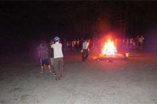 | 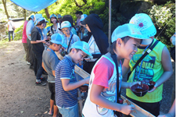 |
最終日となった20日、荷物整理した後、流しそうめんの昼食では、みんなの元気な声が森のキャンプ場内に響き、楽しかった三日間を終えました。
■福島の子ども保養プロジェクト 2014コヨットin埼玉の概要
- 日 程：
- 8月18日（月）～8月20日（水）
- 場 所：
- 埼玉県立名栗げんきプラザ
飯能市上名栗1289－2 - 主 催：
- 2014コヨットin埼玉実行委員会
- 共 催：
- 埼玉県ユニセフ協会
- 協 力：
- JA埼玉県中央会、JAいるま野、ボーイスカウト埼玉県連盟、株式会社伊藤園、東京サラヤ株式会社、株式会社グリーン観光サービス、イケア・ジャパン株式会社（IKEA）
2014福島の子ども保養プロジェクト「夏休み特別企画」について
今年度は7月19日から8月20日の期間、夏休み特別企画として全国各地で12の保養企画がおこなわれました。埼玉での企画もその一つとしておこなったものです。
埼玉の生協は、全国の生協と共に、福島に住む子供たちを応援しています。
（詳しくは日本生協連ホームページ）